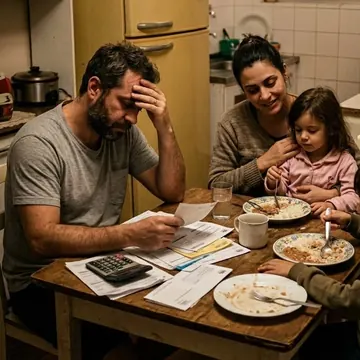

Terapia individual: entenda o que sente e saiba o que fazer com isso
Encontros semanais em que a gente olha com calma para a ansiedade, o cansaço e os pensamentos que não param, e encontra jeitos práticos de lidar com eles no dia a dia.
Sou a Carla, psicóloga aqui em Cachoeirinha. Se você anda cansado, com a cabeça cheia e sem saber direito para onde está indo, a gente conversa sobre isso no seu tempo e sem julgamento.
Muita gente chega ao meu consultório sem saber explicar o que sente. Não tem problema, a primeira conversa serve justamente para isso.

Encontros semanais em que a gente olha com calma para a ansiedade, o cansaço e os pensamentos que não param, e encontra jeitos práticos de lidar com eles no dia a dia.
Término, troca de emprego, luto, chegada de um filho, mudança de cidade. Você não precisa passar por isso sozinho.
É a mesma conversa, por videochamada. Serve para quem trabalha longe ou tem a rotina apertada. Você só precisa de um lugar reservado e de internet.
Aqui não existe resposta certa ou errada, e você pode falar do jeito que sair.
Eu explico sem palavras difíceis. Você sabe o que estamos fazendo e por quê.
O sigilo é regra da minha profissão, e eu levo isso a sério desde a primeira mensagem.
Atendo de segunda a sexta, das 8h às 20h. Dá para encaixar a sessão antes do expediente ou na volta para casa.
Se você se identificou com algum desses pontos, a terapia pode fazer diferença no seu dia a dia. E se não estiver aqui, me conta mesmo assim.
Para quando a cabeça não desliga, o peito aperta antes de compromissos e o sono não vem. A gente entende de onde isso vem e encontra jeitos de lidar com isso no dia a dia.
Para parar de se cobrar tanto e se comparar com todo mundo.
Brigas que se repetem, dificuldade de dizer não, término ou dúvida se vale a pena continuar.
Para quem vive no limite, sem energia nem para o que gosta.
Um espaço para sentir a falta de alguém ou de algo sem ter que fingir que está tudo bem.
Troca de emprego, mudança de cidade, chegada de um filho. Para decidir com mais calma e segurança.
Atendo no meu consultório na Vale do Sol e também online. A maioria das pessoas que me procura está cansada de viver no automático: cumpre tudo, mas não se reconhece nas próprias escolhas.
Na terapia eu não digo o que você deve fazer. Eu te ajudo a enxergar com mais clareza o que você já sente, para que você decida o próximo passo com mais segurança.
Fica na Sala 501, um espaço tranquilo para você falar à vontade. Se preferir não sair de casa, a sessão pode ser online.
Av. Flores da Cunha, 1320 · R. Lindolfo Wagner, 336 · Sala 501 · Vale do Sol, Cachoeirinha, RS, 94910-002Abrir no Google Maps“Estou aqui para te ouvir e te ajudar a dar o próximo passo.”
Carla Peres, psicóloga Agendar pelo WhatsAppSeparei as perguntas que eu mais recebo. Se a sua não estiver aqui, é só me mandar uma mensagem.
Perguntar pelo WhatsAppÉ só me chamar no WhatsApp pelo (51) 99880-8595. Eu te explico como funciona e a gente encontra um horário que caiba na sua semana.
Não. Muita gente me procura porque sente que a vida está no automático ou quer se conhecer melhor. Você não precisa esperar as coisas ficarem pesadas para começar.
É uma conversa. Você me conta o que te trouxe até aqui, do jeito que conseguir, e eu explico como vamos trabalhar juntos. Não precisa chegar sabendo o que dizer.
Sim. É a mesma conversa, por videochamada. Você só precisa de internet e de um lugar reservado onde possa falar à vontade.
Atendo de segunda a sexta, das 8h às 20h, sempre com horário marcado. Dá para encaixar antes do trabalho ou na volta para casa.
Na Av. Flores da Cunha, 1320 (R. Lindolfo Wagner, 336), Sala 501, Vale do Sol, em Cachoeirinha. Se preferir não sair de casa, a sessão pode ser online.
Sim. O sigilo é regra da minha profissão. Tudo o que você contar nas sessões fica entre nós.
Os valores e as formas de pagamento eu passo pelo WhatsApp. Me chama que eu te explico tudo direitinho.